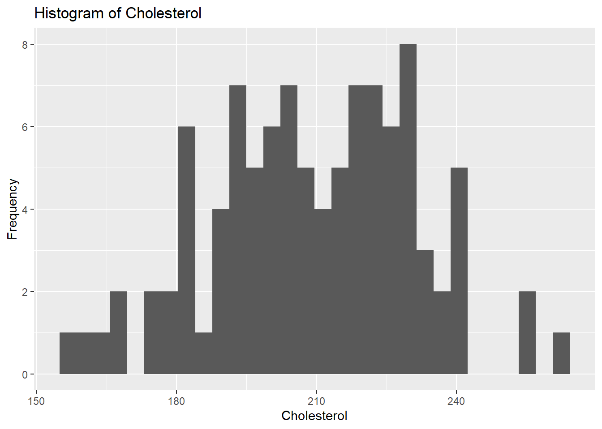

First, let’s generate a synthetic dataset with 100 observations and 5 variables: age, sex, hypertension, cholesterol, and heart_health.
#Load required packageslibrary(dplyr)
Warning: package 'dplyr' was built under R version 4.3.2
Attaching package: 'dplyr'
The following objects are masked from 'package:stats':
filter, lag
The following objects are masked from 'package:base':
intersect, setdiff, setequal, union
library(ggplot2)
Warning: package 'ggplot2' was built under R version 4.3.2
library(gtsummary)
Warning: package 'gtsummary' was built under R version 4.3.2
#Set seed for reproducibilityset.seed(123)#Set sample sizen <-100#Create ages between 18 and 79age <-sample(18:79, n, replace =TRUE)#Create sexes (male or female)sex <-sample(c("male", "female"), n, replace =TRUE)#Create hypertension status (yes or no)hypertension <-sample(c("yes", "no"), n, replace =TRUE)#Create total cholesterol levels between 125 and 275, assuming males have higher total cholesterol than femalescholesterol <-ifelse(sex =="male", rnorm(n, mean =220, sd =20), rnorm(n, mean =200, sd =20))cholesterol <-pmax(pmin(cholesterol, 275), 125)#Create heart health scores between 25 and 90, assuming those with higher total cholesterol have higher heart health scoresheart_health <-50+0.2* cholesterol +rnorm(n, mean =0, sd =10)heart_health <-pmax(pmin(heart_health, 90), 25)#Create a data frame to store the generated dataheart <-data.frame(age = age, sex = sex, hypertension = hypertension, cholesterol = cholesterol, heart_health = heart_health)#Get an overview and summary of the datastr(heart)
'data.frame': 100 obs. of 5 variables:
$ age : int 48 32 68 31 20 59 67 71 60 54 ...
$ sex : chr "male" "female" "female" "male" ...
$ hypertension: chr "yes" "no" "no" "no" ...
$ cholesterol : num 232 182 200 220 218 ...
$ heart_health: num 90 89.7 86.9 90 90 ...
summary(heart)
age sex hypertension cholesterol
Min. :20.00 Length:100 Length:100 Min. :158.2
1st Qu.:32.00 Class :character Class :character 1st Qu.:194.2
Median :46.00 Mode :character Mode :character Median :209.5
Mean :47.56 Mean :209.3
3rd Qu.:60.50 3rd Qu.:225.9
Max. :79.00 Max. :263.9
heart_health
Min. :57.23
1st Qu.:84.12
Median :90.00
Mean :85.84
3rd Qu.:90.00
Max. :90.00
Part 2 - Processing Data
Then let’s create two subset datasets, one with only males and one with only females.
#Assign only males in the "heart" dataset to a new objectheart_males <-subset(heart, sex =="male")#Assign only females in the "heart" dataset to a new objectheart_females <-subset(heart, sex =="female")#Get an overview and summary of the new objectsstr(heart_males)
'data.frame': 45 obs. of 5 variables:
$ age : int 48 31 20 59 69 31 44 68 74 45 ...
$ sex : chr "male" "male" "male" "male" ...
$ hypertension: chr "yes" "no" "yes" "no" ...
$ cholesterol : num 232 220 218 188 231 ...
$ heart_health: num 90 90 90 90 90 ...
summary(heart_males)
age sex hypertension cholesterol
Min. :20.00 Length:45 Length:45 Min. :183.4
1st Qu.:35.00 Class :character Class :character 1st Qu.:204.9
Median :48.00 Mode :character Mode :character Median :225.7
Mean :48.16 Mean :221.3
3rd Qu.:59.00 3rd Qu.:233.9
Max. :77.00 Max. :263.9
heart_health
Min. :66.22
1st Qu.:87.89
Median :90.00
Mean :87.38
3rd Qu.:90.00
Max. :90.00
str(heart_females)
'data.frame': 55 obs. of 5 variables:
$ age : int 32 68 67 71 60 54 71 42 43 22 ...
$ sex : chr "female" "female" "female" "female" ...
$ hypertension: chr "no" "no" "no" "no" ...
$ cholesterol : num 182 200 181 215 218 ...
$ heart_health: num 89.7 86.9 83.3 66.2 81.2 ...
summary(heart_females)
age sex hypertension cholesterol
Min. :22.00 Length:55 Length:55 Min. :158.2
1st Qu.:32.00 Class :character Class :character 1st Qu.:185.2
Median :44.00 Mode :character Mode :character Median :201.5
Mean :47.07 Mean :199.4
3rd Qu.:63.50 3rd Qu.:215.8
Max. :79.00 Max. :229.4
heart_health
Min. :57.23
1st Qu.:81.09
Median :88.70
Mean :84.58
3rd Qu.:90.00
Max. :90.00
Let’s create a third subset dataset with only those with hypertension.
#Create a new object by extracting only the data for those with hypertension from the "heart" datasetheart_hypertension <-subset(heart, hypertension =="yes")#Get an overview and summary of the new objectstr(heart_hypertension)
'data.frame': 52 obs. of 5 variables:
$ age : int 48 20 60 54 43 22 44 74 45 46 ...
$ sex : chr "male" "male" "female" "female" ...
$ hypertension: chr "yes" "yes" "yes" "yes" ...
$ cholesterol : num 232 218 218 193 210 ...
$ heart_health: num 90 90 81.2 90 90 ...
summary(heart_hypertension)
age sex hypertension cholesterol
Min. :20.00 Length:52 Length:52 Min. :158.2
1st Qu.:38.75 Class :character Class :character 1st Qu.:196.3
Median :48.00 Mode :character Mode :character Median :212.5
Mean :48.77 Mean :212.3
3rd Qu.:60.50 3rd Qu.:226.2
Max. :79.00 Max. :263.9
heart_health
Min. :57.23
1st Qu.:84.81
Median :90.00
Mean :86.36
3rd Qu.:90.00
Max. :90.00
Part 3 - Exploring Data
Let’s explore each variable in the dataset, starting with the outcome variable, heart_health.
#Summary statistics and histogram for heart_healthheart$heart_health <-as.numeric(heart$heart_health)summary(heart$heart_health)
Min. 1st Qu. Median Mean 3rd Qu. Max.
57.23 84.12 90.00 85.84 90.00 90.00
ggplot(heart, aes(x = heart_health)) +geom_histogram() +labs(x ="Heart Health Score", y ="Frequency", title ="Histogram of Heart Health Score")
`stat_bin()` using `bins = 30`. Pick better value with `binwidth`.
The mean (86) is less than the median (90) for the variable heart_health. The histogram of heart_health shows a left-skewing distribution with most observations at around x = 90.
Next let’s explore the variable age.
#Summary statistics and histogram for ageheart$age <-as.numeric(heart$age)summary(heart$age)
Min. 1st Qu. Median Mean 3rd Qu. Max.
20.00 32.00 46.00 47.56 60.50 79.00
ggplot(heart, aes(x = age)) +geom_histogram() +labs(x ="Age in Years", y ="Frequency", title ="Histogram of Age")
`stat_bin()` using `bins = 30`. Pick better value with `binwidth`.
The mean (48) is slightly greater than the median (46) for the variable age. The histogram of age shows a relatively normal distribution.
Now let’s explore the variable cholesterol.
#Summary statistics and histogram for cholesterolheart$cholesterol <-as.numeric(heart$cholesterol)summary(heart$cholesterol)
Min. 1st Qu. Median Mean 3rd Qu. Max.
158.2 194.2 209.5 209.3 225.9 263.9
ggplot(heart, aes(x = cholesterol)) +geom_histogram() +labs(x ="Cholesterol", y ="Frequency", title ="Histogram of Cholesterol")
`stat_bin()` using `bins = 30`. Pick better value with `binwidth`.

The mean and median for the variable cholesterol are the same (209). The histogram of cholesterol shows a relatively normal distribution.
Next let’s explore the variable sex.
#Summary tables for the variable sextable(heart$sex, useNA ="always")
female male <NA>
55 45 0
prop.table(table(heart$sex))
female male
0.55 0.45
55% of the observations are female, and 45% are male. There are no missing observations for sex.
Finally, let’s explore the variable hypertension.
#Summary tables for the variable hypertensiontable(heart$hypertension, useNA ="always")
no yes <NA>
48 52 0
prop.table(table(heart$hypertension))
no yes
0.48 0.52
52% of the observations have hypertension, and 48% do not have hypertension. There are no missing observations for sex.
Here is a summary table of the outcome and predictors, stratified by sex.
#Create a summary table of the variables, stratified by sexheart %>%tbl_summary(by = sex, statistic =list(all_continuous() ~"{mean} ({sd})")) %>%modify_caption("Summary Table of Heart Health Data, Stratified by Sex")
Summary Table of Heart Health Data, Stratified by Sex
Characteristic
female, N = 551
male, N = 451
age
47 (17)
48 (16)
hypertension
28 (51%)
24 (53%)
cholesterol
199 (19)
221 (19)
heart_health
84.6 (7.7)
87.4 (5.2)
1 Mean (SD); n (%)
Here is another summary table of the outcome and predictors, stratified by hypertension.
#Create a summary table of the variables, stratified by hypertensionheart %>%tbl_summary(by = hypertension, statistic =list(all_continuous() ~"{mean} ({sd})")) %>%modify_caption("Summary Table of Heart Health Data, Stratified by Hypertension")
Summary Table of Heart Health Data, Stratified by Hypertension
Characteristic
no, N = 481
yes, N = 521
age
46 (17)
49 (17)
sex
female
27 (56%)
28 (54%)
male
21 (44%)
24 (46%)
cholesterol
206 (23)
212 (21)
heart_health
85.3 (7.0)
86.4 (6.6)
1 Mean (SD); n (%)
Now let’s create some scatterplots between the main outcome (heart_health) and the continuous predictors, as well as a correlation table.
#Create scatterplots between heart_health and the continuous predictorspairs(cbind(heart_health, age, cholesterol))
#Create a correlation matrix of the continuous variablescor(cbind(heart_health, age, cholesterol))
heart_health age cholesterol
heart_health 1.0000000 -0.1070062 0.3763685
age -0.1070062 1.0000000 -0.1262592
cholesterol 0.3763685 -0.1262592 1.0000000
Based on the scatterplots and the correlation matrix, there doesn’t seem to be a strong correlation between the outcome (heart_health) and any of the continuous predictors (age, cholesterol).
Let’s also look at the boxplots between the main outcome and the categorical variables.
#Create a boxplot of sex and heart_healthggplot(heart, aes(x =factor(sex), y = heart_health)) +geom_boxplot() +labs(x ="Sex", y ="Heart Health Score", title ="Boxplot of Sex and Heart Health Score")
#Create a boxplot of hypertension and heart_healthggplot(heart, aes(x =factor(hypertension), y = heart_health)) +geom_boxplot() +labs(x ="Hypertension", y ="Heart Health Score", title ="Boxplot of Hypertension and Heart Health Score")
The boxplots of heart_health and the categorical variables (sex, hypertension) show negatively-skewed distributions.
Let’s also look at the stratified boxplots.
#Create a boxplot of sex and heart_health, stratified by hypertensionggplot(heart, aes(x =factor(sex), y = heart_health, fill =factor(hypertension))) +geom_boxplot() +labs(x ="Sex", y ="Heart Health Score", title ="Boxplot of Sex and Heart Health Score, Stratified by Hypertension") +scale_fill_discrete(name ="Hypertension")
#Create a boxplot of hypertension and heart_health, stratified by sexggplot(heart, aes(x =factor(hypertension), y = heart_health, fill =factor(sex))) +geom_boxplot() +labs(x ="Hypertension", y ="Heart Health Score", title ="Boxplot of Hypertension and Heart Health Score, Stratified by Sex") +scale_fill_discrete(name ="Sex")
The stratified boxlplots show negatively-skewed distributions across all strata.
Next let’s plot heart health as a function of age for males and females.
#Plot heart health as a function of age for males and femalesggplot(heart_males, aes(x = age, y = heart_health)) +geom_point() +ggtitle("Age and Heart Health Score Among Males")
ggplot(heart_females, aes(x = age, y = heart_health)) +geom_point() +ggtitle("Age and Heart Health Score Among Females")
There is no noticeable correlation between age and heart health score for either males or females. There are several data points at heart health = 90, which is more than expected. This study sample may be healthier than the average population.
Then let’s plot heart health as a function of cholesterol for males and females.
#Plot heart health as a function of cholesterol for males and femalesggplot(heart_males, aes(x = cholesterol, y = heart_health)) +geom_point() +ggtitle("Total Cholesterol and Heart Health Score Among Males")
ggplot(heart_females, aes(x = cholesterol, y = heart_health)) +geom_point() +ggtitle("Total Cholesterol and Heart Health Score Among Females")
There is a positive correlation between total cholesterol and heart health score for males but no noticeable correlation or females. There are several data points at heart health = 90, which is more than expected. This study sample may be healthier than the average population.
Now let’s plot heart health as a function of age for those with hypertension.
#Plot heart health as a function of age for those with hypertensionggplot(heart_hypertension, aes(x = age, y = heart_health)) +geom_point() +ggtitle("Age and Heart Health Score Among Those With Hypertension")
There is no noticeable correlation between age and heart health score for those with hypertension. There are several data points at heart health = 90, which is more than expected. This study sample may be healthier than the average population.
Finally, let’s plot heart health as a function of cholesterol for those with hypertension.
#Plot heart health as a function of cholesterol for those with hypertensionggplot(heart_hypertension, aes(x = cholesterol, y = heart_health)) +geom_point() +ggtitle("Total Cholesterol and Heart Health Score Among Those With Hypertension")
There is a positive correlation between total cholesterol and heart health score for those with hypertension. There are several data points at heart health = 90, which is more than expected. This study sample may be healthier than the average population.
Part 4 - Fitting Data
Let’s fit a few simple models to the data. Let’s start with fitting heart health as the outcome and age and cholesterol as the predictors for males.
#Fit heart health as the outcome and age and cholesterol as the predictors for malesmales <-lm(heart_health ~ age + cholesterol, data = heart_males)summary(males)
Call:
lm(formula = heart_health ~ age + cholesterol, data = heart_males)
Residuals:
Min 1Q Median 3Q Max
-19.072 -1.271 1.130 2.627 7.094
Coefficients:
Estimate Std. Error t value Pr(>|t|)
(Intercept) 62.31682 8.77786 7.099 1.05e-08 ***
age 0.02096 0.04466 0.469 0.64128
cholesterol 0.10870 0.03826 2.841 0.00691 **
---
Signif. codes: 0 '***' 0.001 '**' 0.01 '*' 0.05 '.' 0.1 ' ' 1
Residual standard error: 4.848 on 42 degrees of freedom
Multiple R-squared: 0.1646, Adjusted R-squared: 0.1248
F-statistic: 4.138 on 2 and 42 DF, p-value: 0.0229
Among males, total cholesterol is significantly associated with heart health score (p-value = 0.01), controlling for age; however, age is not significantly associated with hearth health score, controlling for total cholesterol (p-value = 0.64). The low R-squared value indicates that only 16% of the variation in heart health score is explained by the model.
Let’s do the same model fitting for females.
#Fit heart health as the outcome and age and cholesterol as the predictors for femalesfemales <-lm(heart_health ~ age + cholesterol, data = heart_females)summary(females)
Call:
lm(formula = heart_health ~ age + cholesterol, data = heart_females)
Residuals:
Min 1Q Median 3Q Max
-26.401 -2.929 3.104 4.628 7.485
Coefficients:
Estimate Std. Error t value Pr(>|t|)
(Intercept) 67.57861 12.25700 5.513 1.12e-06 ***
age -0.06280 0.06099 -1.030 0.3079
cholesterol 0.10005 0.05554 1.801 0.0774 .
---
Signif. codes: 0 '***' 0.001 '**' 0.01 '*' 0.05 '.' 0.1 ' ' 1
Residual standard error: 7.405 on 52 degrees of freedom
Multiple R-squared: 0.1013, Adjusted R-squared: 0.06671
F-statistic: 2.93 on 2 and 52 DF, p-value: 0.06227
Among females, neither age (p-value = 0.31) nor total cholesterol (p-value = 0.08) is significantly associated with heart health, controlling for other variables. The low R-squared value indicates that only 10% of the variation in heart health score is explained by the model.
Finally, let’s fit heart health as the outcome and age and cholesterol as the predictors for those with hypertension.
#Fit heart health as the outcome and age and cholesterol as the predictors for those with hypertensionhtn <-lm(heart_health ~ age + cholesterol, data = heart_hypertension)summary(htn)
Call:
lm(formula = heart_health ~ age + cholesterol, data = heart_hypertension)
Residuals:
Min 1Q Median 3Q Max
-26.578 -1.344 2.032 4.033 6.385
Coefficients:
Estimate Std. Error t value Pr(>|t|)
(Intercept) 64.19107 9.56511 6.711 1.86e-08 ***
age -0.03406 0.05325 -0.640 0.5255
cholesterol 0.11228 0.04255 2.639 0.0111 *
---
Signif. codes: 0 '***' 0.001 '**' 0.01 '*' 0.05 '.' 0.1 ' ' 1
Residual standard error: 6.276 on 49 degrees of freedom
Multiple R-squared: 0.1338, Adjusted R-squared: 0.09839
F-statistic: 3.783 on 2 and 49 DF, p-value: 0.02966
Among those with hypertension, total cholesterol is significantly associated with heart health score (p-value = 0.01), controlling for age; however, age is not significantly associated with hearth health score, controlling for total cholesterol (p-value = 0.53). The low R-squared value indicates that only 13% of the variation in heart health score is explained by the model.